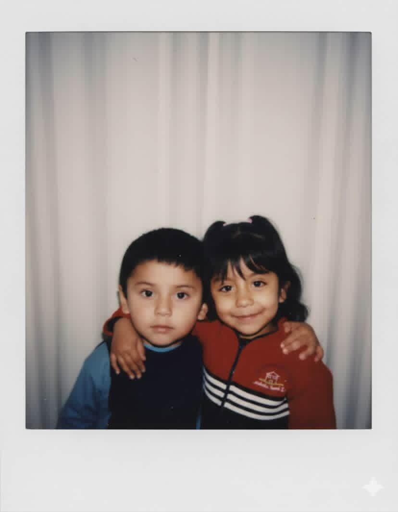
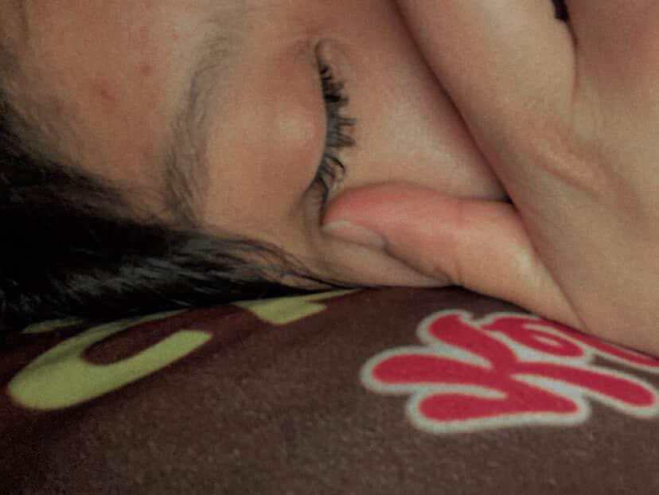
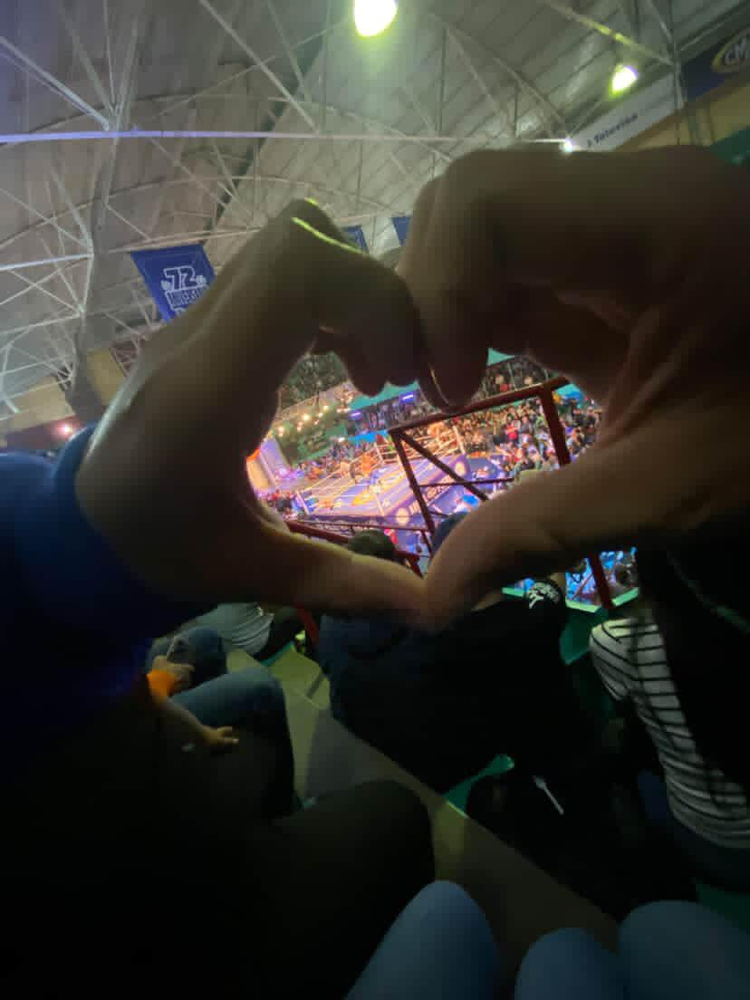
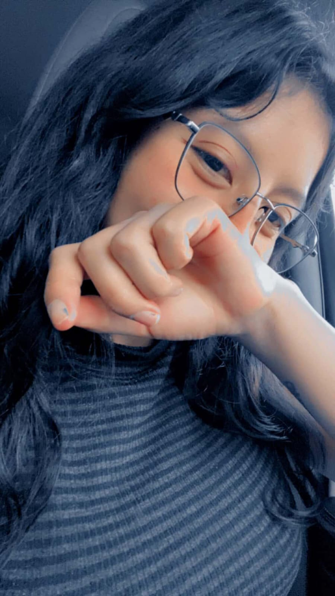
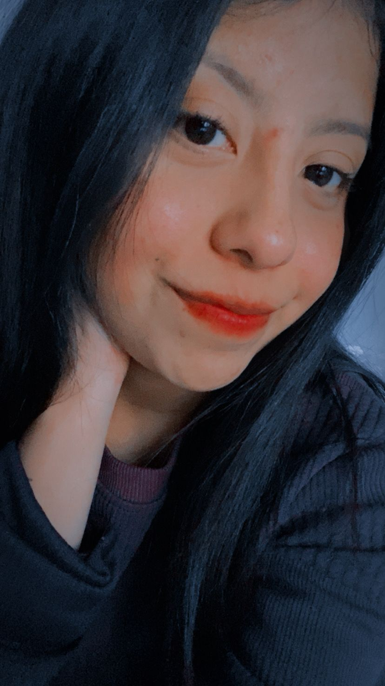
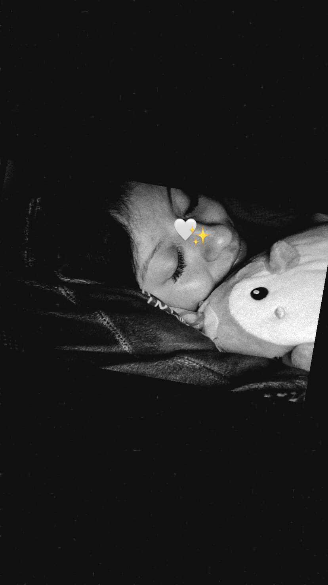
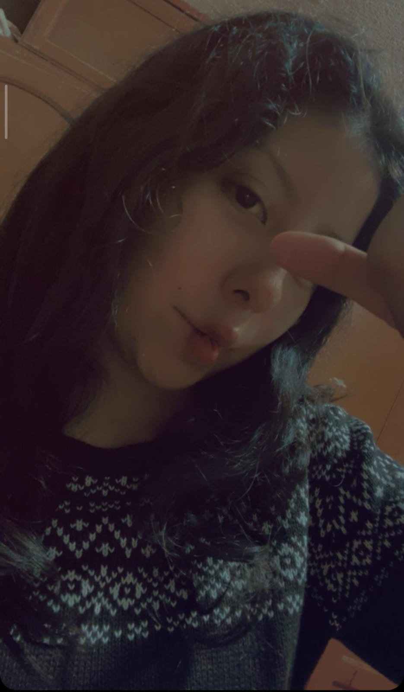
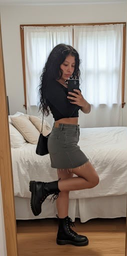
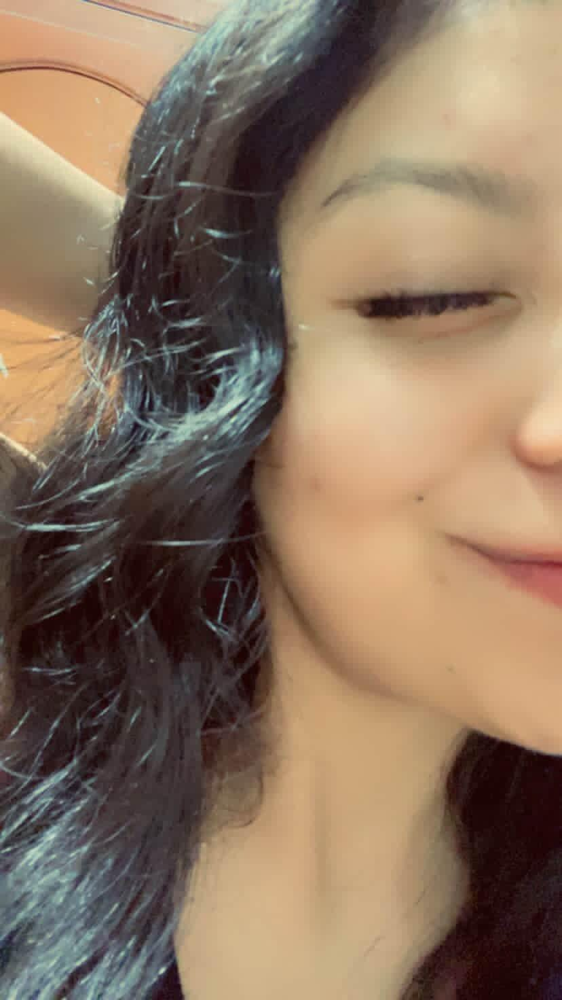

01/08/26
MI AMOR... ❤️
Antes de empezar.
Quiero que leas esto sin prisas.
Porque aquí guardé una parte de mi corazón.
MI AMOR... ❤️
Antes de empezar.
Quiero que leas esto sin prisas.
Porque aquí guardé una parte de mi corazón.

Hoy es el Día de la Novia, pero mientras escribo esto me doy cuenta de algo bien curioso... si existiera un día para agradecerle a la vida por la persona que puso en mi camino, también sería hoy.
Porque hablar de ti nunca se me hace difícil, lo difícil es encontrar palabras que le hagan justicia a todo lo que significas para mí.
A veces me preguntan qué cambió desde que llegaste a mi vida, y la respuesta es bien sencilla: cambió la forma en la que veo los días.
Antes un día bonito era simplemente un buen día.
Ahora un día bonito es aquel en el que estás tú.

Y es raro... porque no hiciste magia, no llegaste prometiendo cambiar mi mundo ni buscaste convertirte en alguien indispensable. Simplemente fuiste tú. Con tu manera de reírte, con tu forma de abrazar, con esa paciencia tan tuya, con ese corazón enorme que tienes y con todos esos detalles que quizá tú ves como algo normal, pero que para mí significan muchísimo.
Hay algo que me encanta de nosotros.
No siento que tenga que impresionarte para que me quieras.
No siento que deba esconder mis miedos o fingir que siempre estoy bien.
Contigo puedo ser exactamente quien soy, con mis momentos buenos, con mis días pesados, con mis tonterías, con mis sueños, con mis inseguridades... y aun así me haces sentir suficiente.
Y créeme que encontrar un lugar donde uno puede descansar el corazón no pasa todos los días.

Gracias por quererme de esa forma.
Gracias por escuchar hasta las cosas que parecen insignificantes.
Gracias por hacerme sentir importante con acciones tan pequeñas que seguramente ni notas.
Gracias por convertir los momentos simples en recuerdos que quiero guardar para siempre.
No sé si alguna vez te has dado cuenta, pero ya eres parte de muchas versiones de mí.
Estás cuando escucho una canción y automáticamente pienso: "esta le gustaría".
Estás cuando me pasa algo bueno y eres la primera persona a la que quiero contárselo.
Estás cuando algo sale mal y, sin decirme una sola palabra, el simple hecho de pensar en ti hace que todo pese un poquito menos.
Y eso... eso ya no es una casualidad.
Eso es hogar.

Si alguien me preguntara cuál ha sido una de las mejores cosas que me han pasado, no tendría que pensarlo mucho.
Diría tu nombre.
Porque contigo entendí que el amor no siempre hace ruido.
A veces llega despacito.
Se mete entre las conversaciones de madrugada.
Entre las risas por cosas sin sentido.
Entre los "¿ya comiste?" y los "avísame cuando llegues".
Entre abrazos que duran unos segundos, pero que se quedan todo el día.
Y cuando menos te das cuenta... ya no puedes imaginar tu vida sin esa persona.
Eso me pasó contigo.

No sé qué hiciste para convertirte en mi lugar favorito, pero gracias por hacerlo.
También quiero que sepas algo.
No solo te amo por todo lo que eres hoy.
También amo la persona en la que te estás convirtiendo.
Me emociona verte crecer, cumplir metas, perseguir tus sueños, descubrir nuevas versiones de ti.
Y si algún día dudas de ti misma, quiero ser esa voz que te recuerde todo lo que vales.
Quiero aplaudir cada logro como si fuera mío.
Quiero sostener tu mano cuando las cosas no salgan como esperabas.
Quiero celebrar contigo los días felices y quedarme abrazándote en los difíciles.
Porque amarte también significa elegir quedarme cuando la vida no sea perfecta.
Y esa es una decisión que tomaría una y mil veces.

Mi amor...
No sé qué nos espera dentro de un año, dentro de cinco o dentro de diez.
No puedo prometer que todos los días serán fáciles.
Pero sí puedo prometerte algo mucho más importante.
Mientras esté conmigo la oportunidad de hacerlo, nunca voy a dejar de elegirte.
Voy a seguir enamorándome de ti en cada etapa.
Voy a seguir aprendiendo quién eres.
Voy a seguir buscando maneras de hacerte sonreír.
Voy a seguir cuidando este "nosotros" como el regalo tan bonito que es.
Porque tú nunca has sido una costumbre para mí.
Sigues siendo esa persona que logra acelerarme el corazón cuando aparece una notificación tuya.
Sigues siendo la mujer que hace que el tiempo se pase volando cuando estamos juntos.
Sigues siendo la razón por la que muchas veces sonrío sin darme cuenta.
Y, sinceramente...
Espero que nunca dejes de serlo.

Hoy es el Día de la Novia.
Pero para mí también es el día perfecto para recordarte que, entre todas las coincidencias que pudieron existir en esta vida...
Mi favorita siempre va a ser haberte encontrado.
Gracias por cada abrazo.
Gracias por cada risa.
Gracias por cada "te amo".
Y, sobre todo...
Gracias por permitirme formar parte de tu vida.
Ojalá nunca olvides que hay alguien que todos los días se siente inmensamente afortunado de poder llamarte "mi amor".

Feliz Día de la Novia, mi vidaaaaa.
Te amo con todo lo que soy, con todo lo que he sido y con todo lo que algún día voy a ser.
Y si volviera a empezar mi vida desde cero...
Volvería a buscarte.
Porque entre millones de personas...
Siempre volvería a elegirte a ti. ❤️

Posdata.
Ojalá dentro de muchos años podamos volver a leer esta carta juntos y sonreír porque todo lo que soñábamos aquí... lo terminamos viviendo.
Con todo mi corazón, Natalia ❤️
